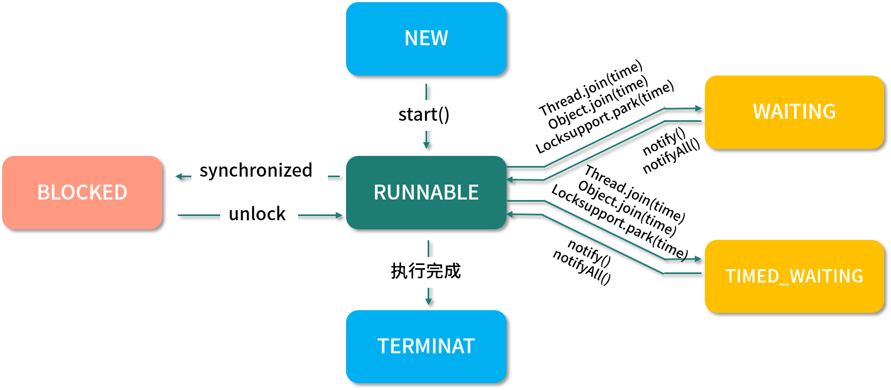

线程（Thread）是并发编程的基础，也是程序执行的最小单元，它依托进程而存在。一个进程中可以包含多个线程，多线程可以共享一块内存空间和一组系统资源，因此线程之间的切换更加节省资源、
更加轻量化，也因此被称为轻量级的进程。
当然，线程也是面试中常被问到的一个知识点，是程序员必备的基础技能，使用它可以有效地提高程序的整体运行速度。
本课时的面试问题是，线程的状态有哪些？它是如何工作的？
典型回答
线程的状态在JDK1.5之后以枚举的方式被定义在Thread的源码中，它总共包含以下6个状态：
- NEW，新建状态，线程被创建出来，但尚未启动时的线程状态；
- RUNNABLE，就绪状态，表示可以运行的线程状态，它可能正在运行，或者是在排队等待操作系统给它分配CPU资源；
- BLOCKED，阻塞等待锁的线程状态，表示处于阻塞状态的线程正在等待监视器锁，比如等待执行synchronized代码块或者使用synchronized标记的方法；
- WAITING，等待状态，一个处于等待状态的线程正在等待另一个线程执行某个特定的动作，比如，一个线程调用了Object.wait0方法，那它就在等待另一个线程调用Object.notify0或
Object.notifyAll0方法； - TIMED WAITING，计时等待状态，和等待状态（WAITING）类似，它只是多了超时时间，比如调用了有超时时间设置的方法Object.wait（long timeout）和Thread.join（long timeout）等这些方法时，它才会进入此状态；
- TERMINATED，终止状态，表示线程已经执行完成。
线程状态的源代码如下：
1 | public enum State { |
线程的工作模式是，首先先要创建线程并指定线程需要执行的业务方法，然后再调用线程的 start()方法，此时线程就从NEW（新建）状态变成了RUNNABLE（就绪）状态，此时线程会判断要执行的方法中有没有synchronized同步代码块，如果有并且其他线程也在使用此锁，那么线程就会变为
BLOCKED（阻塞等待）状态，当其他线程使用完此锁之后，线程会继续执行剩余的方法。
当遇到Object.wait()或Thread.join()方法时，线程会变为WAITING（等待状态）状态，如果是带了超时时间的等待方法，那么线程会进入TIMED WAITING（计时等待）状态，当有其他线程执行了
notify()或notifyAll()方法之后，线程被唤醒继续执行剩余的业务方法，直到方法执行完成为止，此时整个线程的流程就执行完了，执行流程如下图所示：

考点分析
线程一般会作为并发编程的起始问题，用于引出更多的关于并发编程的面试问题。当然对于线程的掌握程度也决定了你对并发编程的掌握程度，通常面试官还会问：
BLOCKED（阻塞等待）和WAITING（等待）有什么区别？
start()方法和run()方法有什么区别？
线程的优先级有什么用？该如何设置？
线程的常用方法有哪些？
接下来我们一起来看这些问题的答案。
知识扩展
1.BLOCKED和WAITING的区别
虽然BLOCKED和WAITING都有等待的含义，但二者有着本质的区别，首先它们状态形成的调用方法不同，其次BLOCKED可以理解为当前线程还处于活跃状态，只是在阻塞等待其他线程使用完某个锁资源；而WAITING则是因为自身调用了Object.wait()或着是Thread.join()又或者是LockSupport.park()而进入等待状态，只能等待其他线程执行某个特定的动作才能被继续唤醒，比如当线程因为调用了Object.wait()而进入WAITING状态之后，则需要等待另一个线程执行
Object.notify()或Object.notifyAll()才能被唤醒。
2.start()和run()的区别
首先从Thread 源码来看，start()方法属于Thread 自身的方法，并且使用了synchronized来保证线程安全，源码如下：
1 | public synchronized void start() { |
run()方法为Runnable的抽象方法，必须由调用类重写此方法，重写的run()方法其实就是此线程要执行的业务方法，源码如下：
1 | public class Thread implements Runnable { |
从执行的效果来说，start()方法可以开启多线程，让线程从NEW状态转换成RUNNABLE状态，而
run()方法只是一个普通的方法。
其次，它们可调用的次数不同，start()方法不能被多次调用，否则会抛出
java.lang.llegalStateException；而 run()方法可以进行多次调用，因为它只是一个普通的方法而已。
3.线程优先级
在Thread 源码中和线程优先级相关的属性有3个：
1 | // 线程可以拥有的最小优先级 |
线程的优先级可以理解为线程抢占CPU时间片的概率，优先级越高的线程优先执行的概率就越大，但并不能保证优先级高的线程一定先执行。
在程序中我们可以通过Thread.setPriority()来设置优先级，setPriority()源码如下：
1 | public final void setPriority(int newPriority) { |
4.线程的常用方法
线程的常用方法有以下几个。
（1）join(）
在一个线程中调用other.join()，这时候当前线程会让出执行权给other线程，直到other 线程执行完或者过了超时时间之后再继续执行当前线程，join()源码如下：
1 | public final synchronized void join(long millis) |
从源码中可以看出join()方法底层还是通过wait()方法来实现的。
例如，在未使用join()时，代码如下：
1 | public class ThreadExample { |
程序执行结果为：
主线程睡眠：1秒。
子线程睡眠：1秒。
主线程睡眠：2秒。
子线程睡眠：2秒。
主线程睡眠：3秒。
子线程睡眠：3秒。
子线程睡眠：4秒。
子线程睡眠：5秒。
从结果可以看出，在未使用join()时主子线程会交替执行。
然后我们再把join()方法加入到代码中，代码如下：
1 | public class ThreadExample { |
程序执行结果为：
子线程睡眠：1秒。
子线程睡眠：2秒。
主线程睡眠：1秒。/∥thread.join(2000)；等待2秒之后，主线程和子线程再交替执行子线程睡眠：3秒。
主线程睡眠：2秒。
子线程睡眠：4秒。
子线程睡眠：5秒。
主线程睡眠：3秒。
从执行结果可以看出，添加join()方法之后，主线程会先等子线程执行2秒之后才继续执行。
（2）yield()
看Thread的源码可以知道 yield()为本地方法，也就是说yield()是由C或C++实现的，源码如下：
1 | public static native void yield(); |
yield()方法表示给线程调度器一个当前线程愿意出让CPU使用权的暗示，但是线程调度器可能会忽略这个暗示。
比如我们执行这段包含了yield()方法的代码，如下所示：
1 | public static void main(String[] args) throws InterruptedException { |
当我们把这段代码执行多次之后会发现，每次执行的结果都不相同，这是因为yield()执行非常不稳定，线程调度器不一定会采纳 yield()出让CPU使用权的建议，从而导致了这样的结果。